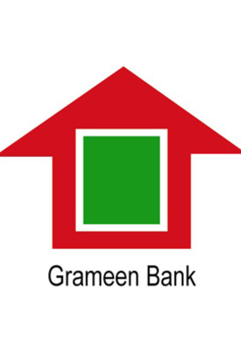

Grameen Bank
The Bank witnessed in 2020 when its 2,568 branches continued to serve 81,678 villages embracing close to 93% of the country�s landscape. A new batch of 76,671 members joined the Banks�s fast-growing fraternity. It reflects an acceleration of the growth of the Bank�s membership in 2020 compared to 2019. The new entrants in the Bank swelled the head count of its membership to a staggering 9.34 million, a number higher than the population of many countries of the World.
The aggregate amount disbursed in 2020 under its diverse credit windows amounted to BDT 174.83 billion (USD 2.06 billion). It raised the aggregate amount of disbursements since the inception of the Bank to BDT 2328.45 billion (USD 31.62 billion) by the end of the year under review.
For the improvement of the financial and social status of families linked to the Bank, it continued to support them with scholarship and education loans to their children to pave their way out of the cycle of poverty trap in which poor are languishing from generations to generations. Our programme to spread literacy starts with a scholarship programme under which financial support is given to the children of Grameen members for payment of school dues, purchase of books and stationery at the school level. The number of awardees in this category in 2020 was about 26,000 children. By the end of 2020, an aggregate number of 384,096 children benefited from this scheme since the inception of the programme. Grameen Bank�s outlay under the programme amounted to BDT 663.67 million (USD 7.83 million).
Beyond the secondary and higher secondary levels our assistance takes the form of education loans for pursuing studies up to the postgraduate levels. By the end of the year under review, 54,664 students were provided loans to pursue courses in various disciplines including medical, engineering and agriculture. GB has taken a step to assist the children of its borrowers to pursue a 3-year Diploma and 4-years B.Sc. course in nursing and Midwifery in the international standard Grameen Caledonian College of Nursing. By the end of the year 847 students enrolled in the diploma course in nursing and midwifery; in which 237 in B.Sc. level course in nursing. Most of them have secured good jobs while others have joined advanced courses at home and abroad.
Beyond the secondary and higher secondary levels our assistance takes the form of education loans for pursuing studies up to the postgraduate levels. By the end of the year under review, 54,664 students were provided loans to pursue courses in various disciplines including medical, engineering and agriculture.
GB has taken a step to assist the children of its borrowers to pursue a 3-year Diploma and 4-years B.Sc. course in nursing and Midwifery in the international standard Grameen Caledonian College of Nursing. By the end of the year 847 students enrolled in the diploma course in nursing and midwifery; in which 237 in B.Sc. level course in nursing. Most of them have secured good jobs while others have joined advanced courses at home and abroad.